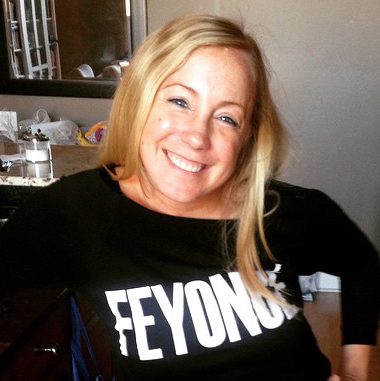

Welcome to Yakkety Yak LLC,
a full-service content marketing company.
Yakkety Yak LLC is a full-service content marketing company that produces custom written content for businesses, including company blogs and newsletters, social media marketing, case studies, white papers, press releases, copywriting services, product marketing and more. Our goal is to help businesses connect with the right target audience through writing, using a voice, and tone specifically designed to reach end users.
Yakkety Yak works as an extension of your marketing team to improve engagement, increase exposure and send the right message to your customers.
Find out how
Our mission is to make it easier for business owners and women entrepreneurs to reach their ideal customers through creative and smart communication. We help our clients define their voice, develop a content strategy and implement a successful campaign to expand their reach and increase revenue. Yakkety Yak focuses on accuracy, drive, innovation, and professionalism. We are meticulous about our work, driven to excel, innovative with our ideas and professional in our business approach.
What’s new at Yakkety Yak in 2015
The last six months have been incredibly busy for Yakkety Yak. We’ve hired new writers, worked with new clients and built a stronger network of service providers—all with one goal in mind: to help businesses reach their target audience more effectively.
read more
Developing Content When Starting a Business
Congratulations on starting a business! It’s a wild ride, but fun, rewarding and an enormous challenge, but so darn worth it.
read more
Launching a Company Newsletter
In the world of digital communication, there is a lot of noise. Just think about your news feed on Facebook. And if you are one of the many dabbling in social media advertising, you learn really fast that if you want people to see your content, you have to be prepared to pay.
read more
The Perfect Blog Post
Everyone is talking about the value of blogging in business. Content Marketing is the new “it” phrase of digital communication and blogs are at the epicenter of the conversation.
read more
How to Measure Content Marketing Success
Possibly the greatest aspect of content marketing is the ability to track success, views and engagement on almost platform. Metrics tell us exactly what content is most engaging to each audience, which in turn can help us develop a more effective strategy.
read more
Don't miss any of our latest tips on marketing your business.
Sign up for our newsletter today!
Take advantage of our ability to do the following
Content Strategy
Yakkety Yak will work with your business to define your target audience and customer personas. From there we develop a voice and tone specifically designed to appeal to your ideal customer and apply that to all of your communications platforms, from website copy to Twitter. The goal is to develop content with one custom tone, designed to appeal to a specific target audience, to drive the most revenue for your organization.
Editorial Calendars
Part of building a successful content strategy is staying organized. Yakkety Yak will map out the blog, newsletter and social media schedule for your organization on a quarterly basis. Breaking down the content into subject matter buckets, we will brainstorm blog ideas and ways to communicate your company messaging clearly and consistently. Yakkety Yak offers consulting services in the area of editorial calendar creation, so please contact us for more information.
Content Audit
During a content audit, Yakkety Yak will review all of your existing company website content, marketing materials and company blogs to identify content gaps, areas for improvement and outdated or irrelevant materials. Working either independently or hand in hand with your marketing team, we will formulate recommendations on how to better define your company voice, how to increase visibility and improve engagement.
Website Copy
Yakkety Yak will review, rewrite or create your website copy from scratch. From company information, descriptions for products and services, to basic copywriting services, our team will ensure your content is properly branded and target for your ideal customer.
Company Newsletter
A company newsletter written for clients and subscribers is a great way to direct readers to your original blog content, company news and current promotions. As part of the content strategy, Yakkety Yak will compile original newsletter content, while also including links to the blog content to drive readers back to the website. The newsletters can be targeted to specific business segments, and also be directed to a more general audience. Through email marketing, we help you control your message so recipients keep your business top of mind.
Custom Blogs
To launch the content strategy, Yakkety Yak will work with you to develop a monthly editorial calendar, including a minimum of once-weekly blog posts. Topics will be approved in advance and written by Yakkety Yak, with two weeks or more of lead-time for approval and editing prior to posting on the blog. Company news, case studies and media references will also be posted on the blog and promoted via social media, all in an effort to boost awareness and drive traffic to the website. The blog topics will be developed based on a combination of editorial, promotional and targeted content, organized by different content buckets or topics of expertise. These topics are based on the specific services that your business would most like to promote.
Take advantage of our ability to do the following
Yakkety Yak will work with your business to define your target audience and customer personas. From there we develop a voice and tone specifically designed to appeal to your ideal customer and apply that to all of your communications platforms, from website copy to Twitter. The goal is to develop content with one custom tone, designed to appeal to a specific target audience, to drive the most revenue for your organization.
Part of building a successful content strategy is staying organized. Yakkety Yak will map out the blog, newsletter and social media schedule for your organization on a quarterly basis. Breaking down the content into subject matter buckets, we will brainstorm blog ideas and ways to communicate your company messaging clearly and consistently. Yakkety Yak offers consulting services in the area of editorial calendar creation, so please contact us for more information.
During a content audit, Yakkety Yak will review all of your existing company website content, marketing materials and company blogs to identify content gaps, areas for improvement and outdated or irrelevant materials. Working either independently or hand in hand with your marketing team, we will formulate recommendations on how to better define your company voice, how to increase visibility and improve engagement.
Yakkety Yak will review, rewrite or create your website copy from scratch. From company information, descriptions for products and services, to basic copywriting services, our team will ensure your content is properly branded and target for your ideal customer.
+

Company Newsletter
A company newsletter written for clients and subscribers is a great way to direct readers to your original blog content, company news and current promotions. As part of the content strategy, Yakkety Yak will compile original newsletter content, while also including links to the blog content to drive readers back to the website. The newsletters can be targeted to specific business segments, and also be directed to a more general audience. Through email marketing, we help you control your message so recipients keep your business top of mind.
+

Custom Blogs
To launch the content strategy, Yakkety Yak will work with you to develop a monthly editorial calendar, including a minimum of once-weekly blog posts. Topics will be approved in advance and written by Yakkety Yak, with two weeks or more of lead-time for approval and editing prior to posting on the blog. Company news, case studies and media references will also be posted on the blog and promoted via social media, all in an effort to boost awareness and drive traffic to the website. The blog topics will be developed based on a combination of editorial, promotional and targeted content, organized by different content buckets or topics of expertise. These topics are based on the specific services that your business would most like to promote.
Yakktey Yak Content Creation Services
Yakkety Yak provides content creation and copywriting services, designed to extend the voice and tone of the organization to all facets of the business. From case studies to marketing collateral and product descriptions, our team of professional writers is ready to ensure that your business is always sending the right message.
Case Studies
Case Studies are a great way to demonstrate experience for potential customers. We will develop the template, collect project details and write the copy, so that every relevant project your business completes is well-documented and carefully presented to potential new customers.
Press Releases
Whether used simply to make announcements or to garner attention from the press, Yakkety Yak will write everything from your company boiler plate to press releases. The goal is to attract attention through carefully crafted sentences and valuable information that tells your business’s story. Press releases are an essential element of growing businesses and we can make sure they end up in the right hands.
White Papers
White Papers are a fantastic tool for establishing thought leadership within a given field. These longer documents should be carefully researched and written in an unbiased manner. Using best journalistic practices, Yakkety Yak can create and compile white papers with graphics, multiple sources and credible research to help your business build brand recognition. With a minimum of 1,500 words, white papers provide your business with the platform to tell a meaningful story.
Marketing Materials
From one-page flyers to sales presentations, Yakkety Yak can help your business design and implement a cohesive marketing strategy. Working alongside your company leadership to tell the right story, our team of writers will compile the right content to put your business in the best position to succeed.
Product Descriptions
From retail products to company services, our team will determine the most creative way to describe your offerings. Applying the right voice to your website copy, we make sure that your descriptions match up with your overall company mission. The goal is always to use content to appeal to your target audience, while driving revenue and increasing engagement.
Copywriting
Our copywriting services extend to all areas of a company brand. We apply best writing practice to all areas of your company communication to ensure that your brand mission translates in writing. From website copy to product marketing to marketing collateral and more, our team provides consistent and timely writing services to make sure your company is telling the best version of your company story.

About Yakkety Yak
When it comes to connecting with a target market, there is nothing more critical than knowing your market. Ashley Logan founded Yakkety Yak based on the principal of writing for one target audience, with one common voice. She has built a successful career on the basis of writing for a specific audience, so that the customized content reaches the right consumer through custom blogs, social media marketing website copy, marketing collateral and more. And it’s working.
In addition to building a successful content marketing business, Ashley is a professional writer, with regular features in the Chicago Sun Times, the Architects Newspaper and the Nashville Post. While writing primarily about real estate, design and workplace strategies, her background as a journalist makes her well equipped to meet deadlines on a wide variety of topics.
Prior to starting a writing career, Ashley worked in sales and marketing in Chicago for almost ten years. With robust sales and marketing training, she was one of the top producers in the Midwest at Newmark Grubb Knight Frank, a global commercial real estate firm. With robust sales and marketing training, she has a proven track record in business, with unparalleled creative drive—a rare combination that has continued to produce results for her clients.
Ashley Logan is a native Chicagoan, and a most-of-the-time fan of the Chicago Bears. She has a master’s of science in journalism from Northwestern University and a bachelor’s degree in creative writing from University of Tennessee.
To learn more about Yakkety Yak, email Ashley at ashley@yakketyyakllc.com.

Social Media
Yakkety Yak will provide a monthly social media calendar that will also coincide with the blog schedule. This calendar will be presented monthly. Upon approval, Yakkety Yak will distribute the content on multiple social media outlets. We will focus our social media efforts on Facebook, Twitter, Google+ and LinkedIn on the following schedule.
Read more on our social media services here